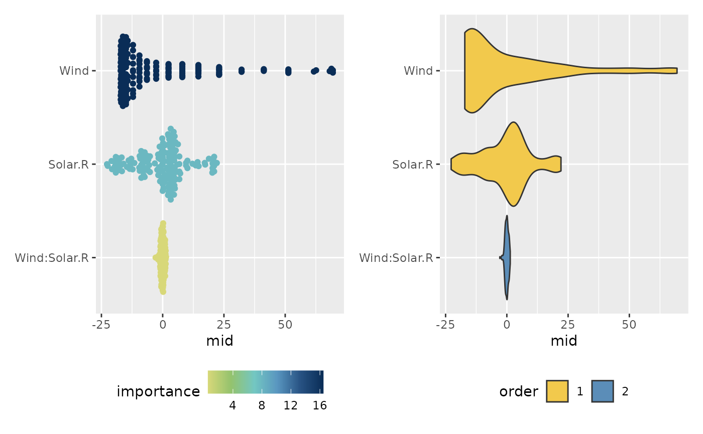
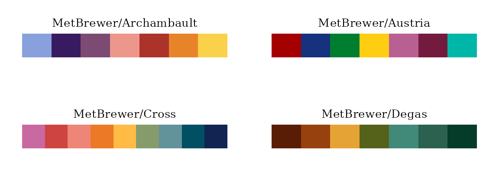
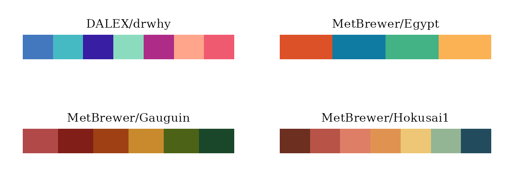
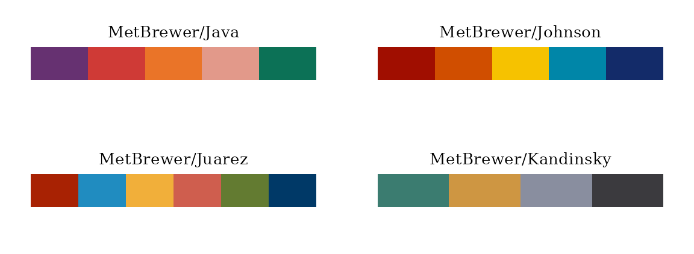
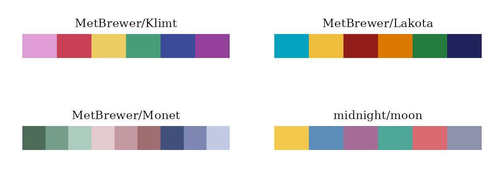
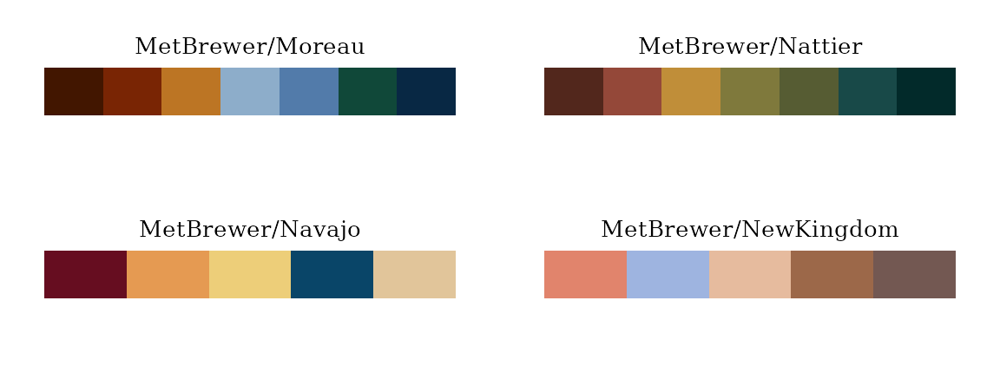
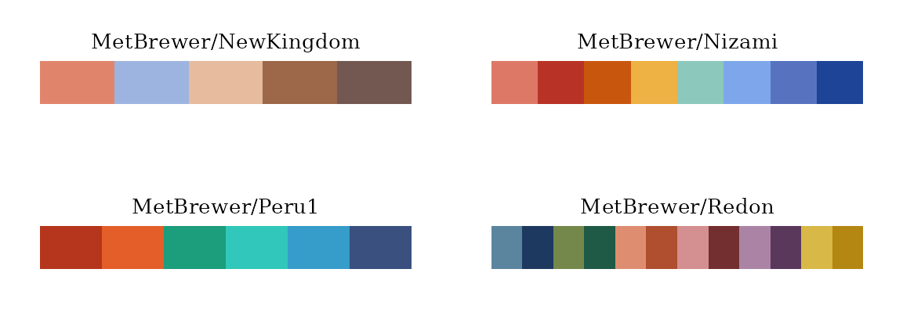
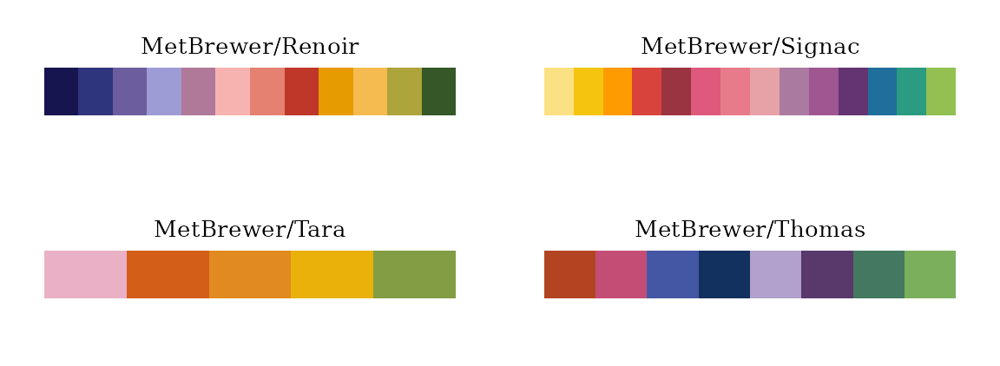
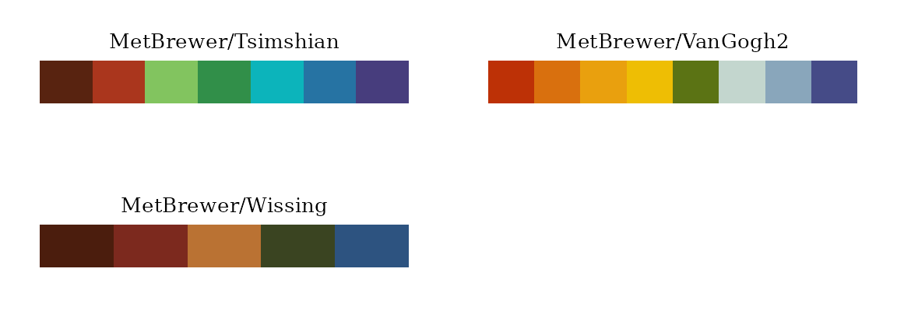

Introduction to midnight: Core Modeling and Fast Solvers
Source:vignettes/articles/midnight.Rmd
midnight.RmdThe midnight package is designed to provide robust modeling capabilities and highly optimized solvers, working seamlessly alongside the midr package. The core philosophy of midnight revolves around its two main functionalities:
mid_reg(): A seamless tidymodels (parsnip) interface for intuitive model specification.fastLmMatrix(): High-performance multivariate least squares solvers designed for speed and efficiency.
In addition to these core computational features, the package offers advanced visualization tools and integrated color themes.
The Tidymodels Interface
midnight fully integrates with the
tidymodels ecosystem. The mid_reg()
function allows you to specify models using the familiar
parsnip syntax, enabling pipeline-based workflows for
model fitting and hyperparameter tuning.
library(midr)
library(midnight)
library(parsnip)
library(ggplot2)
library(patchwork)
# fitting a model with interaction using mid_reg()
mid <- mid_reg(
params_main = 50, # k
penalty = 5 # lambda
) |>
fit(Ozone ~ (Wind + Solar.R) ^ 2, na.omit(airquality))
mid
#> parsnip model object
#>
#>
#> Call:
#> interpret(formula = Ozone ~ (Wind + Solar.R)^2, data = data,
#> k = 50, lambda = 5)
#>
#> Intercept: 42.099
#>
#> Main Effects:
#> 2 main effect terms
#>
#> Interactions:
#> 1 interaction term
#>
#> Uninterpreted Variation Ratio: 0.33087High-Performance Least Square Solvers
For situations requiring fitting a surrogate model for multivariate responses, midnight provides highly optimized OLS solvers. You can compare standard RcppEigen implementations with the matrix-based solvers provided by midnight.
# standard RcppEigen solver
fit1 <- RcppEigen::fastLm(
Ozone ~ Wind + Solar.R, na.omit(airquality)
)
print(as.matrix(fit1$coefficients))
#> [,1]
#> (Intercept) 77.2460424
#> Wind -5.4017973
#> Solar.R 0.1003506
fit2 <- RcppEigen::fastLm(
Temp ~ Wind + Solar.R, na.omit(airquality)
)
# fastLmMatrix
print(as.matrix(fit2$coefficients))
#> [,1]
#> (Intercept) 85.70227521
#> Wind -1.25187025
#> Solar.R 0.02453254
fit3 <- fastLmMatrix(
cbind(Ozone, Temp) ~ Wind + Solar.R, na.omit(airquality)
)
print(fit3$coefficients)
#> Ozone Temp
#> (Intercept) 77.2460424 85.70227521
#> Wind -5.4017973 -1.25187025
#> Solar.R 0.1003506 0.02453254Furthermore, you can globally override the default Least Squares
Solvers used in mid_reg() (and interpret()) to
leverage this speed boost across your entire modeling pipeline by using
set_fastLmMatrix().
set_fastLmMatrix() # override Least Squares Solvers of midr via options
mids <- mid_reg(
params_main = 50, # k
penalty = 5 # lambda
) |>
fit(cbind(Ozone, Temp) ~ (Wind + Solar.R) ^ 2, airquality)
#> custom solver 'qr' is used
mids
#> parsnip model object
#>
#>
#> Call:
#> interpret(formula = cbind(Ozone, Temp) ~ (Wind + Solar.R)^2,
#> data = data, k = 50, lambda = 5)
#>
#> Intercept: 42.099, 77.793
#>
#> Main Effects:
#> 2 main effect terms
#>
#> Interactions:
#> 1 interaction term
#>
#> Uninterpreted Variation Ratio: 0.33087, 0.52745New Visualization Styles
To understand the output of mid_reg(),
midnight provides S3 methods for MID models like
ggmid.midimp() and persp.mid(). These methods
help translate complex model outputs into interpretable insights.
Variable Importance
Using ggmid(type = 'beeswarm'), as well as
'violinplot' or 'sinaplot', you can
effortlessly plot feature importance distributions to understand the
impact of individual variables and their interactions.
imp <- mid.importance(mid$fit, data = airquality)
p1 <- ggmid(imp, type = "beeswarm", theme = "Hokusai3") +
theme(legend.position = "bottom")
p2 <- ggmid(imp, type = "violin", theme = "moon") +
theme(legend.position = "bottom")
p1 + p2
Integrated Color Themes
To ensure the visualizations are both accurate and aesthetically pleasing, midnight manages a wide array of color palettes, including midnight, colormap, and MetBrewer themes.
Qualitative Themes








Summary
The midnight package combines the computational
speed of fastLmMatrix() with the modern API of
tidymodels via mid_reg(). When paired with
its powerful visualization and color theme systems, it provides a
comprehensive toolkit for building, scaling, and interpreting
sophisticated models.